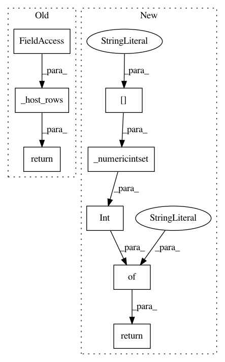

5836891ac3e6bfb68dbe45589ac87e5ac02a2cfa,networkml/featurizers/funcs/host.py,HostBase,_tshark_vlan_id,#HostBase#Any#,393
Before Change
break
return {"tshark_vlan_id": vlan_id}
return self._host_rows(rows_f, first_vlan_id)
def _tshark_ipx(self, rows_f):
def first_ipx(host_rows_f):
After Change
return self._get_flags(mac_df, "_protos_int", WK_IP_PROTOS_INDEX, suffix=None, field_name="wk_ip_protocol")
def _tshark_vlan_id(self, mac_df):
return {
"tshark_tagged_vlan": int(bool(self._numericintset(mac_df["vlan.id"])))
}
def _calc_cols(self, mac, mac_df):
mac_row = {}
for suffix, suffix_func in (
In pattern: SUPERPATTERN
Frequency: 3
Non-data size: 8
Instances
Project Name: CyberReboot/NetworkML
Commit Name: 5836891ac3e6bfb68dbe45589ac87e5ac02a2cfa
Time: 2020-03-28
Author: josh@vandervecken.com
File Name: networkml/featurizers/funcs/host.py
Class Name: HostBase
Method Name: _tshark_vlan_id
Project Name: CyberReboot/NetworkML
Commit Name: 5836891ac3e6bfb68dbe45589ac87e5ac02a2cfa
Time: 2020-03-28
Author: josh@vandervecken.com
File Name: networkml/featurizers/funcs/host.py
Class Name: HostBase
Method Name: _tshark_both_private_ip
Project Name: CyberReboot/NetworkML
Commit Name: 5836891ac3e6bfb68dbe45589ac87e5ac02a2cfa
Time: 2020-03-28
Author: josh@vandervecken.com
File Name: networkml/featurizers/funcs/host.py
Class Name: HostBase
Method Name: _tshark_ipv4_multicast